Rearrangement invariant spaces are studied in much of the literature, see for example Lindenstrauss and Tzafriri (1977). However, we will work with a definition that is a little less restrictive. A rearrangement invariant space on the random variables is a quasi-normed Banach space 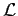 of random variables such that 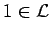, and if 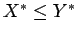 and 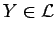, then 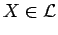 and 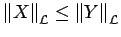. Obviously the spaces 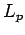 for 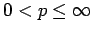 are rearrangement invariant spaces.
Given a rearrangement invariant space , we define the quasi-constant of to be the least constant 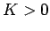 such that 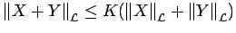 for all 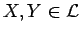. Notice that if 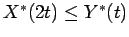, and , then 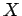 may be written as the sum of two disjoint random variables 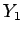 and 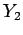 with 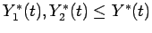, and hence 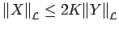.
Given two rearrangement invariant spaces and 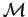, we will say
that embeds into if there is a positive constant  such that if
, then
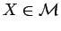 and
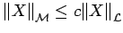.
We will call the least such
such that if
, then
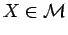 and
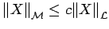.
We will call the least such  the embedding constant of
into .
the embedding constant of
into .
Proof: Let us first obtain the left hand side
inequality. It follows by hypothesis that
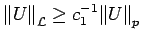, where  is the embedding constant of into
. Furthermore,
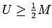, and by Proposition 2.1,
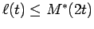. Hence
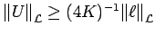, where
is the embedding constant of into
. Furthermore,
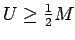, and by Proposition 2.1,
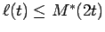. Hence
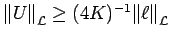, where  is the quasi-constant of .
is the quasi-constant of .
Now let us obtain the right hand inequality.
By Corollary 3.2, we
have that
there is a universal positive  for
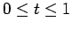
for
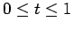
| 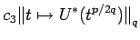 | |||
| 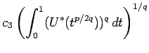 | |||
| 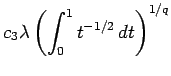 | |||
| 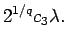 |